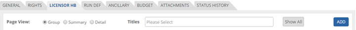
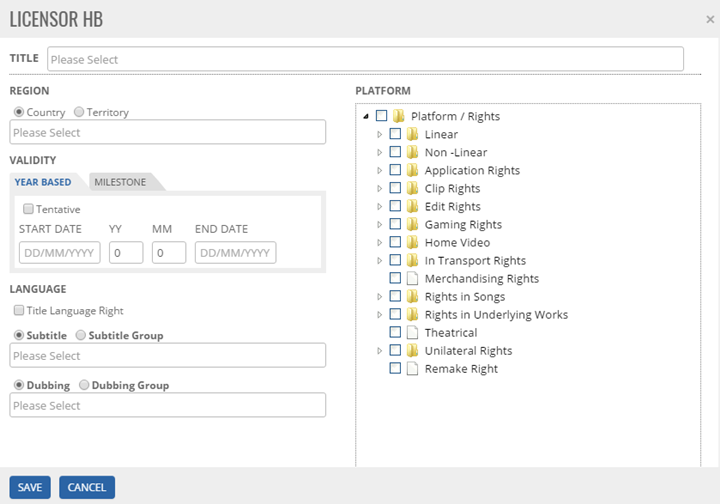
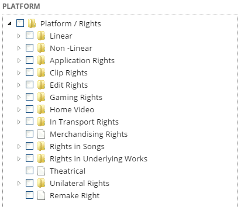
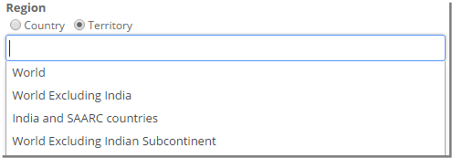
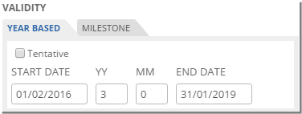
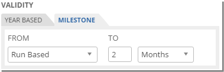
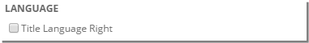
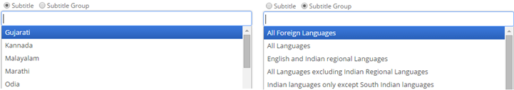
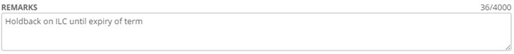
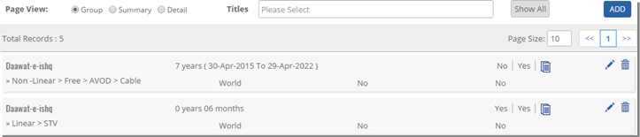


	<section>
		<article>
			<h2>Licensor Holdback<span></span></h2>
			<div>
				<p></p>
				<p>Reverse Holdback can be defined as restrictions applied by the Licensee/Assignee on the Licensor/Assignor.</p>

				<p><b>Adding Holdback for Movies</b></p>

				<p>Click Licensor HB Tab.</p>

				<div class="triangle-border top">				
					
				</div>

				<p>Click Add button, a blank pop-up will be displayed as follows</p>

				<p>System allows to add multiple movies for multiple platforms or single movie for multiple platforms or single movie for single platform or multiple movies for single platform</p>

				<div class="triangle-border top">				
					
				</div>

				<p>To select <b>Title</b>, click on Select Title drop down which shows list of added titles in General Tab. It looks like below.</p>

				<div class="triangle-border top">				
					
				</div>

				<p><b>Platforms/Rights</b></p>

				<div class="triangle-border top">				
					
				</div>

				<p>It displays list of platforms in a tree structure. User needs to select respective platforms by selecting the respective check box. </p>

				<p>Select either Country/Territory in <b>Region</b>. Depending on selection the drop down will be populated.</p>

				<p>To select country click on '<b>Country</b>' check box and all the countries will be populated in the drop down list.</p>

				<div class="triangle-border top">				
					
				</div>

				<p>It shows list of all countries added in Country master.  

				<p>Select required countries by selecting respective from drop down. Otherwise user can search required countries and then select required ones.</p>

				<p>Similarly, Territories can be added for the respective right. </p>

				<div class="triangle-border top">				
					
				</div>

				<p>It shows list of all territories added in Territory master. </p>
				 
				<p>Select required territory by selecting respective from drop down. Otherwise user can search required countries and then select required ones.</p>

				<p>Select <b>VALIDITY</b> as either Year Based or Milestone by selecting the corresponding tab</p>

				<p>If user selects '<b>Year Based</b>' then user need to give Right Start Date and give Rights End Date which should be greater than start date.</p>

				<div class="triangle-border top">				
					
				</div>

				<p>If user selects '<b>Milestone</b>' then user needs to select if it's 'Run Based' or 'TC/OC OK' or 'Delivery of Material'. User will enter no of Days/Weeks/Months/Years from 1st Run or from TC/QC OK or from Delivery of Material respectively.</p>

				<div class="triangle-border top">				
					
				</div>

				<p>Check <b>Title Language</b> if it is acquired.</p>

				<div class="triangle-border top">				
					
				</div>

				<p><b>Subtitling</b> has two options - Language or Language Group</p>

				<p>User can select either a language/s or Language Group/s from the drop down list. </p>

				<div class="triangle-border top">				
					
				</div>

				<p>Select required Subtitle language from drop down. Otherwise user can search required subtitle and then select respective language from drop down.</p>

				<p>Similarly <b>Dubbing</b> can be selected. </p>

				<div class="triangle-border top">				
					
				</div>

				<p>User can add a remark up to 4000 characters.</p>

				<p>Once all the required information is filled, Click <b>SAVE</b> to save the record or Click <b>CANCEL</b> to discard the record.</p>

				<p>After saving the record, the list page will look like this.</p>

				<div class="triangle-border top">				
					
				</div>

				<p>User can edit the record by clicking <b>Pencil Icon</b> or delete the record by clicking <b>Trash Icon</b>.</p>

				<p>For <b>Page View</b>, refer to description mentioned for the Rights page.</p>
			</div>
		</article>
	</section>